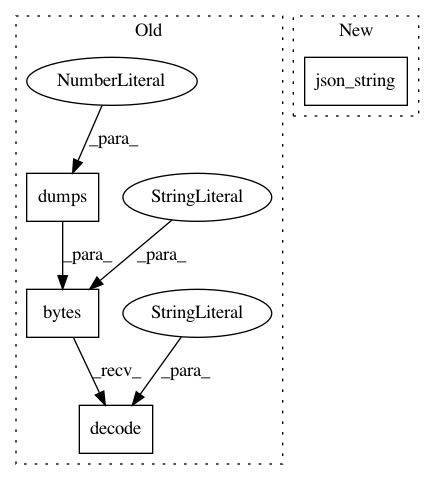

a0861d3ab48c5f2e8b58b4326e7dba23c4e3d967,snips_nlu/cli/metrics.py,,train_test_metrics,#Any#Any#Any#Any#Any#,62
Before Change
metrics.pop("parsing_errors")
with Path(output_path).open(mode="w") as f:
json_dump = json.dumps(metrics, sort_keys=True, indent=2)
f.write(bytes(json_dump, encoding="utf8").decode("utf8"))
After Change
metrics.pop("parsing_errors")
with Path(output_path).open(mode="w") as f:
f.write(json_string(metrics))
In pattern: SUPERPATTERN
Frequency: 3
Non-data size: 4
Instances
Project Name: snipsco/snips-nlu
Commit Name: a0861d3ab48c5f2e8b58b4326e7dba23c4e3d967
Time: 2018-08-17
Author: adrien.ball@snips.ai
File Name: snips_nlu/cli/metrics.py
Class Name:
Method Name: train_test_metrics
Project Name: snipsco/snips-nlu
Commit Name: 914ae53593ff330e2bcaa19690f126c8287600c9
Time: 2018-07-16
Author: adrien.ball@snips.ai
File Name: snips_nlu/resources.py
Class Name:
Method Name: persist_resources
Project Name: snipsco/snips-nlu
Commit Name: a0861d3ab48c5f2e8b58b4326e7dba23c4e3d967
Time: 2018-08-17
Author: adrien.ball@snips.ai
File Name: snips_nlu/cli/metrics.py
Class Name:
Method Name: cross_val_metrics